San Miguel, El Salvador's eastern pearl
San Miguel is a municipality and capital city of the San Miguel department in El Salvador. Historically, it has been(and it is still) for 500 years the most important city of the eastern region of the country. Up until 2013, the estimated population was 247,119 inhabitants, this makes the city the fourth most populous in the country and the third most important due to its economical influence.
San Miguel was founded on May 8, 1530 by Captain Luis de Moscoso under the complete name of “San Miguel de La Frontera” making it the second Spanish Colonial city of the salvadoran territory.
The municipality has a total area of 593,98 km2; and an altitude of 110 meters above sea level. It was established in a valley to the north east from the San Miguel volcano, also known as “Chaparrastique”. The city is very close to the sea and it is an important tourist advantage.
The city is located under the tropical savanna climatic zone of El Salvador, which makes it a hot city. The weather is very characteristic due to the location and the ecosystem around the city. It is considered one of the hottest cities in Central America.
Iconic Buildings
City Cathedral
Built: 1862 - 1962
Style: Eclectic
Full Name: Catedral Basilica Reina de la Paz
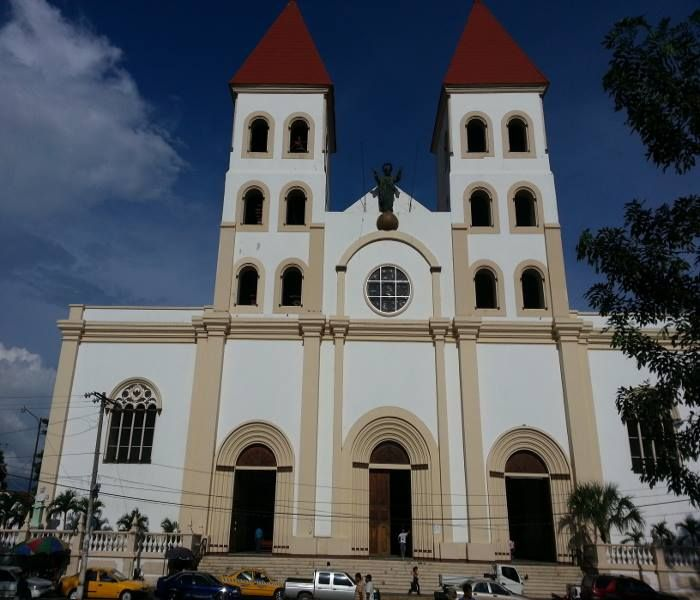Gothic Chaple
Built: 1904 - 1914
Style: Neo Gothic
Full Name: Capilla de la Medalla Milagrosa
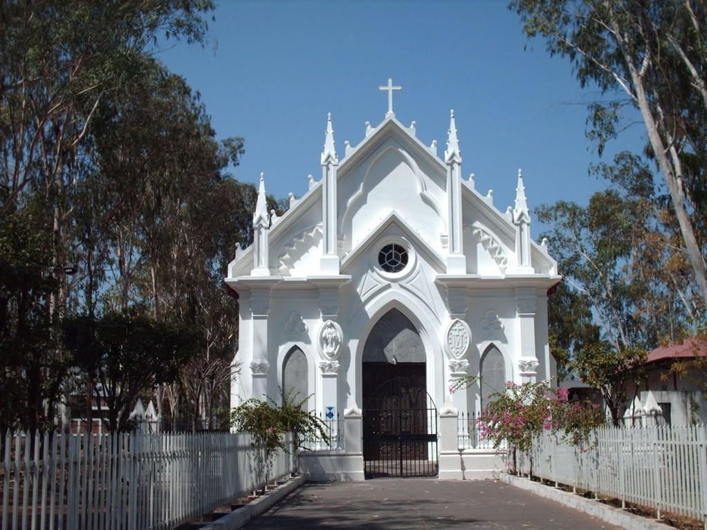Theater
Built: 1903 - 1908
Style: Neo Classical
Full Name: Teatro Nacional Francisco Gavidia
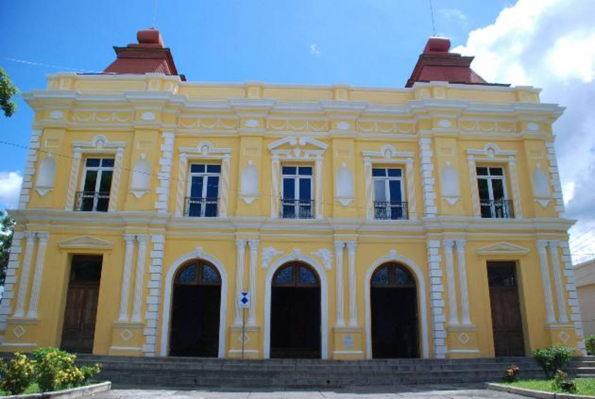The city’s architecture in its historic district is a mixture of classic colonial architecture and other styles like neo gothic, eclectic, classic and neo classical. Among iconic historic buildings we can find multiple chapels including “La Medalla Milagrosa” with its neo gothic, the city Cathedral, the National Theatre, classical catholic chapels, among others.
Lifestyle
Metrocentro Mall
The first mall in the city. House of many local and International companies, stores, restaurants, movie theaters and many others
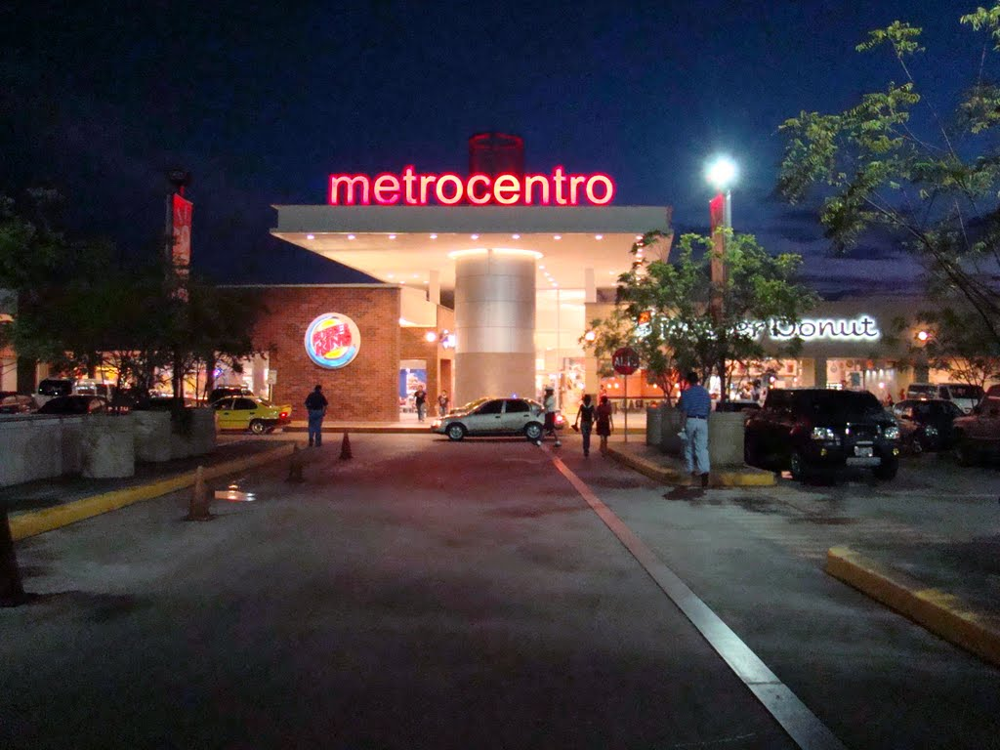El Encuentro Mall
This is currently the newest mall in the city. It has an important mixture of modern architecture and nature friendly infrastructure
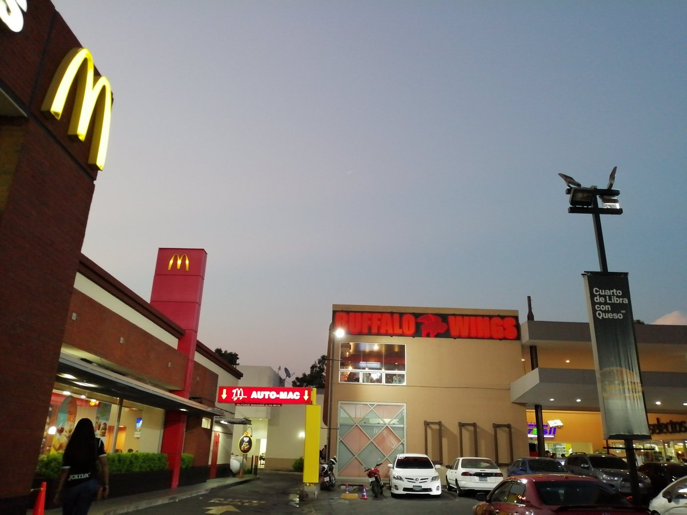Garden Mall
This giant mall is currently under construction and is proof of the ever growing economy of the city
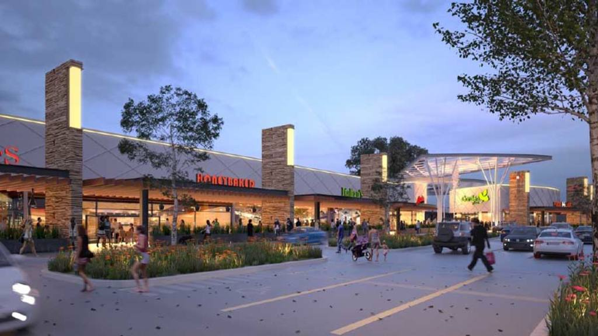There are many interesting places inside the city, there is always something to do. Big malls, restaurants of all kinds where you can find national and international foods and drinks. Night time life is very active here, with parties, movies, and the big “Carnaval de San Miguel” which takes place on the last Saturday of November as a culmination of local religious holidays. It is the biggest carnival in Central America, the event of the year. You can find some amazing pictures in the gallery.
Places to visit
El Jocotal Lagoon
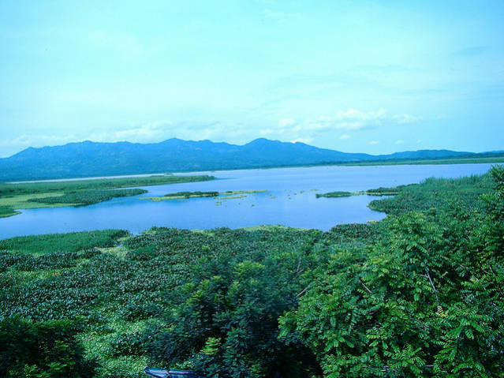Las Flores Beach
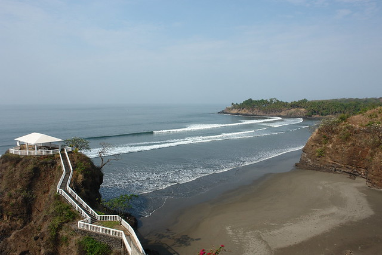El Cuco Beach
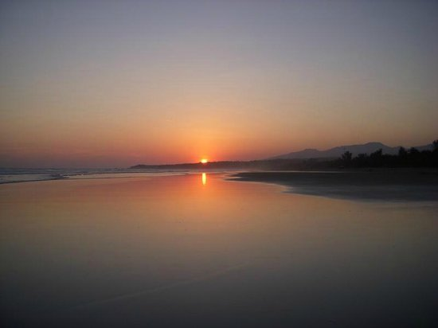Volcan Chaparrastique
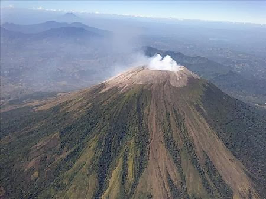Moncagua Touristic Center
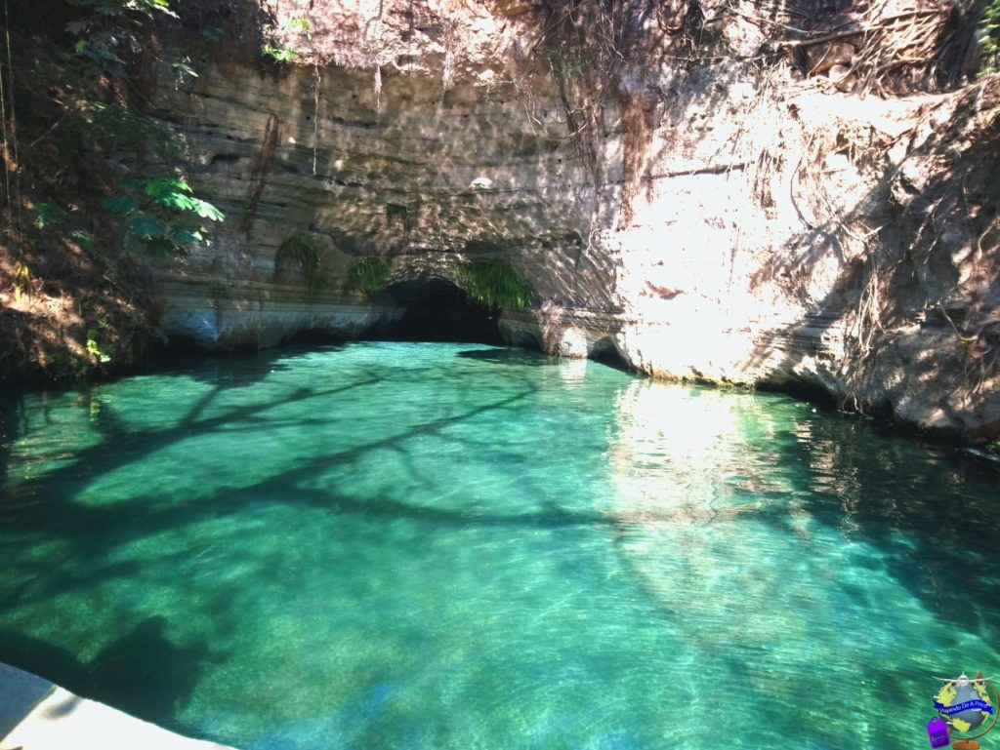Monkey's Adventure Xtreme Zone
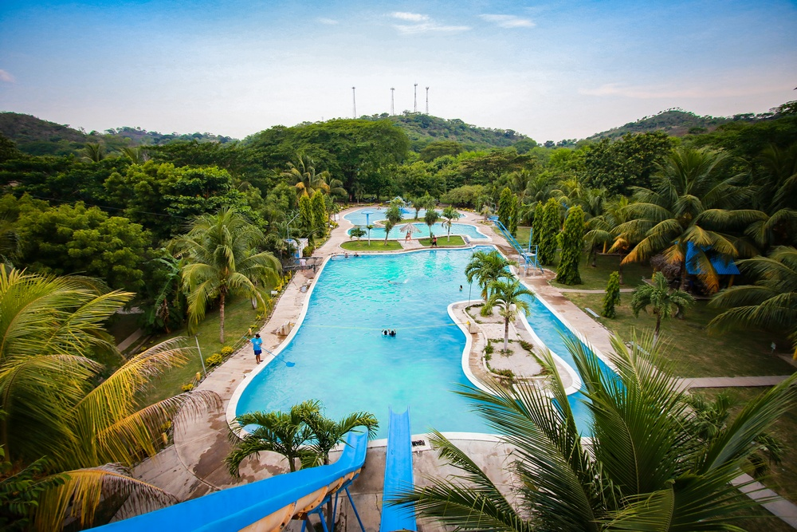There are plenty of things to do outside the city too, as well as places to visit. The geographic location of the city gives tropical weather and amazing places including the colossal Chaparrastique volcano, mystic lagoons, beautiful beaches and breathtaking views.
Upcoming Events
Sunrise at Chaparrastique Volcano
Date: from Sat, July 24 21:30 to Sun, July 25 16:00
Place: San Miguel Tours
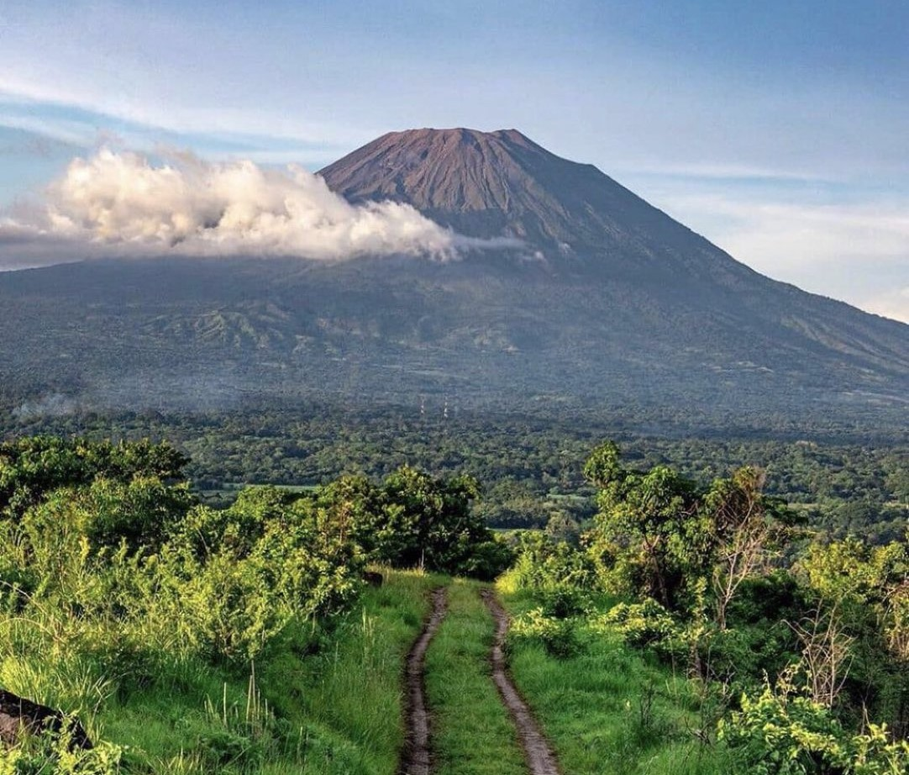International Conference on Sustainable Water Management (ICSWM)
Date: from Sat, Sep 25 10:00 to Sun, Sep 26 15:00
Place: Comfort Inn Hotel
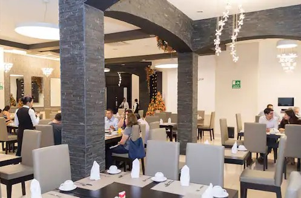World Congress on Indutstrial Biotechnology (WCIB)
Date: from Sat, Sep 25 17:00 to Sun, Sep 26 16:00
Place: Tropico Inn Hotel
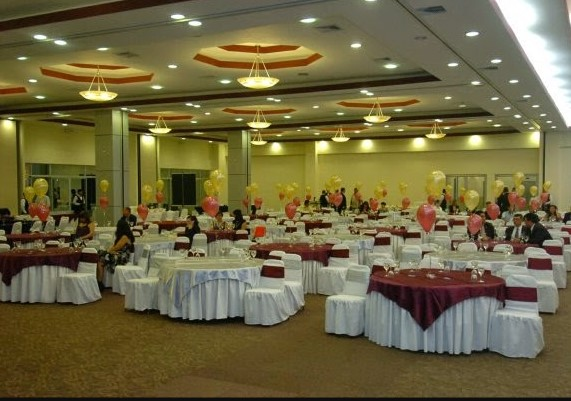